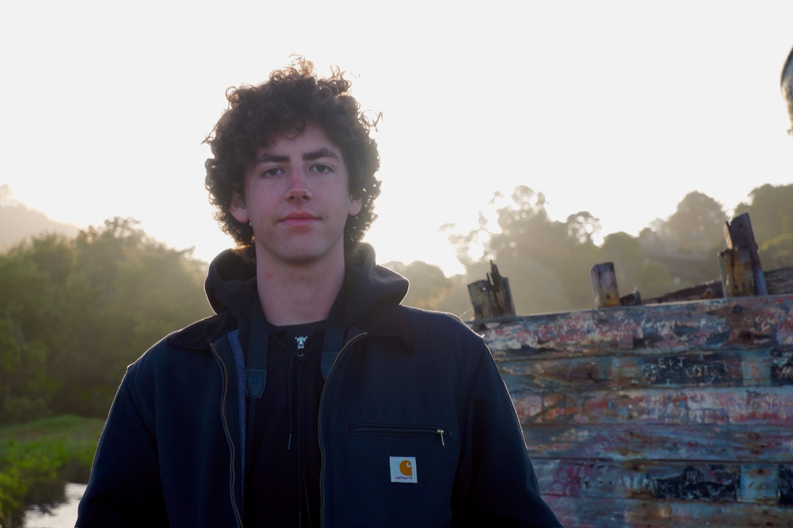

Max Plush is a filmmaker from New York City.
He started out making short-form content for musician Julien Denis, then moved into social-first advertising for brands.
He’s currently traveling through Costa Rica, creating social content for surf camps, hostels and a surfboard repair shop.
Before film, he was a child actor and a model. At Pitzer College, one of the Claremont Colleges, he restarted the surf club and grew it to a 3,000+ person mailing list, teaching people to surf, throwing parties and designing the flyers. After earning a BA in Data Science, he joined Clearlake Capital, a global private equity firm in Santa Monica, as the first hire on its AI team. He later stepped back to pursue his creative passions full time.